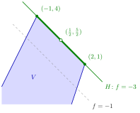

Set of Minimizers of a Quasi-Convex Function¶
Proposition¶
Let be a convex domain and let be a quasi-convex function that has a global minimum on , with minimum value . Then the set of minimizers
is nonempty and convex.
In particular, let , , , and let be a convex set on which attains a global minimum . Then
where is a supporting hyperplane of , and is convex.
Interpretation¶
The minimizers of a quasi-convex function form one connected convex block: there cannot be two separate lowest points with something higher in between. If two points attain the minimum, so does the whole segment between them.

The figure is Example 2. The level sets of are the lines , and decreases towards the upper right: the dashed level line still cuts through . The lowest level reached on is , on the supporting line , which meets in the green segment from to . This segment is the convex set of minimizers; its end points are extreme points of , while its midpoint (open circle) is a minimizer that is not extreme.
The proof is one line. No value lies below , so the points where equals are the points where , and is a sublevel set, which is convex by the definition of quasi-convexity. Since convex functions have convex sublevel sets, the result covers every convex function, and applied to it says that the maximizers of a quasi-concave function with an attained maximum form a convex set. Quasi-convexity is needed: has the two minimizers and nothing in between (Example 3).
For an affine function the level set is a hyperplane that touches without cutting it, since on . The minimizers are then the face , which may be a single point, a segment or a larger piece of .
A common misconception is that minimizers must be extreme points. The proposition only says the set is convex: a whole edge can be optimal, and the points in its middle are not extreme (Examples 2 and 4). This is the OR Modelling case of multiple optimal solutions, where any convex combination of two optimal solutions is again optimal. For a linear objective on a polyhedral set with an extreme point, such a set of minimizers always contains an extreme point (see optima at extreme points).
Key Results¶
- If a quasi-convex on a convex domain attains its minimum value , then is nonempty and convex.
- equals the sublevel set .
- For affine with and a minimum on a convex , the minimizers are with a supporting hyperplane of .
- Applied to : maximizers of a quasi-concave function, in particular of an affine function, with an attained maximum form a convex set.
- A point where attains a global extremum need not be an extreme point of the set (Examples 2 and 4 below).
Examples¶
1. A quasi-convex function that is not convex. Let on . Its sublevel sets are for and for , so is quasi-convex. It is not convex: and , but . The minimum value is and , a convex set, as the proposition predicts.
2. An affine function on an unbounded polyhedral set. Let , a closed unbounded set with , and . On we have , with equality exactly on for , and the other two inequalities cut this line down to . So and the minimizers form the segment from to ; the point is a minimizer but not an extreme point. The function has no maximum on : along , , its value is unbounded.
3. A function that is not quasi-convex. Let on . Its minimum value is , attained at and , but , so is not convex. The proposition does not apply: the sublevel set consists of two intervals, so is not quasi-convex.
4. Minimum at a corner, maximum on an edge. Let and . At the extreme points , , and the values are , , and ; since every point of the compact set is a convex combination of these, on . The minimizer set is . Applying the proposition to the affine, hence quasi-convex, function , the maximizer set is convex: it is , the segment from to , which contains non-extreme points such as .
Prerequisites¶
- Quasi-Convex Function
- Sublevel Sets of Convex Functions
- Supporting Hyperplane
- Global Maximum and Minimum on
Related Concepts¶
- Local Minimum of a Convex Function
- Extrema of Convex Functions on Compact Sets
- Extreme Points on a Supporting Hyperplane
- Minimum Characterized by Separation
- Quasi-Concave Function
- Optima at Extreme Points
- Multiple Optimal Solutions
Sources¶
- Math VI: Convexity and Optimization · Week 3
- H. E. Nusse and M. Dienstknecht, Math VI: Convexity and Optimization, lecture notes 2026–2027, Section 3.2
Aliases: argmin set, set of minimizers, set of optimal solutions is convex Keywords: V_{\mathrm{min}}={\boldsymbol{x}\in D\colon f(\boldsymbol{x})=m}, V_{\mathrm{min}}={\boldsymbol{x}\in D\colon f(\boldsymbol{x})\leq m}, C_m=V\cap H, \arg\min, minimizers of an affine function, minimizer need not be an extreme point Symbols: alpha, element of, intersection, real numbers, square root, subset
Last updated: 10 November 2026 16:43
Set of Minimizers of a Quasi-Convex FunctionOptima at Extreme PointsQuasi-Convex FunctionSublevel Sets of Convex FunctionsSupporting HyperplaneGlobal Maximum and Minimum on \(\mathbb{R}^n\)Local Minimum of a Convex FunctionExtrema of Convex Functions on Compact SetsExtreme Points on a Supporting HyperplaneMinimum Characterized by SeparationQuasi-Concave FunctionMultiple Optimal Solutions